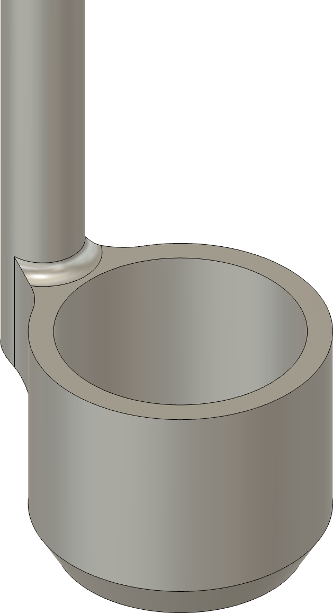
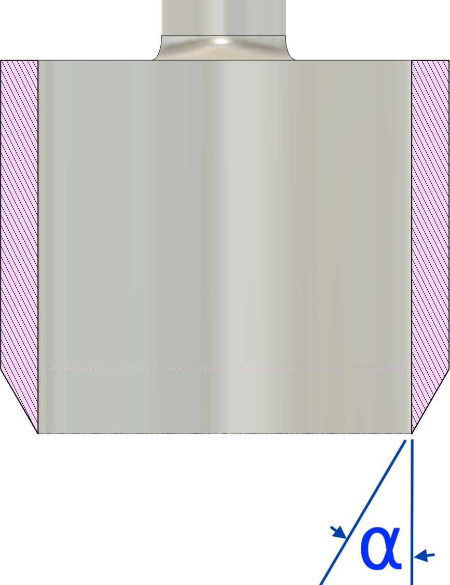

|
|
|
Cell Punch |

Cell Punch Tool

Edge Angle (sectional view)
The edge needs to be sharp so that it can be easily inserted into the comb and not damage the cell to be retained and used for rearing a new queen. The edge needs to be along the outside edge rather than the inside, allowing the cut wax to easily slide through the opening.
If nature were not beautiful, it would not be worth knowing, and if nature were not worth knowing, life would not be worth living.
Henri Poincaré in his book, “The Value of Science”

Example icon
Cell punches do not need to be overly sharp (thusly, the sharpness scale rating of 7). They just need to be easily used. The edges need to be smooth and free from any nicks which would damage the comb.
Sharpness scales (as shown in the grey icon to the left) are used to indicate the recommended sharpness for the blades noted above. You can click on any of the icons showing the sharpness scale and be redirected to the page describing this more. Lower numbers are duller; higher numbers sharper.
These are general recommendations; you will need to use your own judgment, based on the tool’s intended purpose.
Be sure to remove all caked-on wax and propolis. A well-kept tool will last your lifetime, and will still be usable by your children (and maybe your grandkids).
I recommend trying to remove gunk mechanically first.
Propolis can be removed using a solvent. The recommended products to try are ranked below:

If the tool was exposed to any diseased bees or cells, give it a quick wash with isopropyl alcohol. Be sure to rinse with water and then dry afterwards.
As noted above, the recommendation by some for using bleach or trisodium phosphate is not followed here. Those products can damage the metal in the tool.

Camellia Oil Spray Bottle
After using any solvent, be sure to apply a thin coat of camellia oil to the tool. I like the spray bottle of camellia oil sold by Tools for Working Wood.
If the tool’s handle is wooden, show it a little love periodically.
If opting for a finish containing linseed oil, Tried & True’s Original Wood Polish is a great option. They do not use heavy metals added to aid in drying.
Tools in storage need a thin coating of camellia oil applied to all unpainted surfaces.